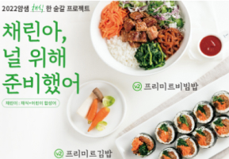

언론보도
[시민일보] 얌샘김밥, 주문전용 어플리케이션 출시
분식 프랜차이즈 얌샘김밥이 자사 주문 전용 어플리케이션 출시를 기념해 신규 회원 가입 이벤트를 진행한다고 밝혔다...
작성일: 2022.04.21
[경북신문] 얌샘김밥, 소상공인시장진흥공단'유망프랜...
분식 프랜차이즈 얌샘김밥이 지난 12일(화) 중소벤처기업부와 소상공인시장진흥공단이 진행하는 '유망 프랜차이즈 성장단계별...
작성일: 2022.04.21
[세계비즈] 얌샘김밥, 매장 운영 노하우 전달하는 '부산...
얌샘김밥이 예비 가맹 점주들에게 다양한 매장 운영 노하우를 전달하는 '부산 사업설명회'를 연다고 13일 밝혔다...
작성일: 2022.04.13
[직썰] 얌샘김밥, '2021 우수 프랜차이즈 지정식' 5년 ...
분식 프랜차이즈 얌샘김밥이 지난 25일 서울 롯데호텔에서 열린 '2021 우수프랜차이즈 지정식'에 5년 연속 선정되는 영예를 얻었...
작성일: 2022.03.11
[베이비타임즈] 얌샘김밥, 채식 신메뉴 '프리미트김밥&...
분식 브랜드 얌샘김밥이 채식주의 고객을 위한 신메뉴 '프리미트김밥'과 '프리미트비빔밥'을 선보이고 이를 체험할...
작성일: 2022.03.08

[서울경제TV] 얌샘김밥, 채식주의 고객 위한 '대체육'...
분식 프랜차이즈 얌샘김밥이 채식주의 고객들을 위해 대체육으로 만든 신메뉴 '프리미트김밥'과 '프리미트비빔밥'을 출시했다고...
작성일: 2022.03.03